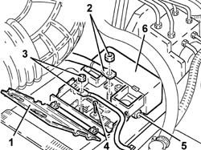
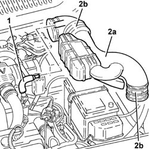
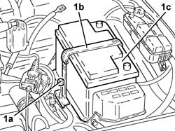
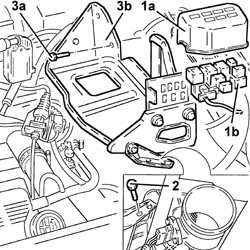
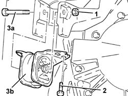
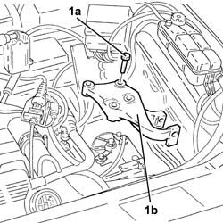
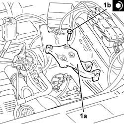
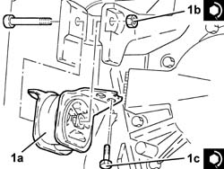

1008A43 power unit rigid mount - automatic transmission side - r r
- Path
- Procedures > 10 ENGINE > 1008 POWER UNIT SUPPORTS > 1008A power unit fastenings > 1008A43 power unit rigid mount - automatic transmission side - r r
- Kind
- repair procedure (removal / refitting; the operation number is the code)
- Applies to
- engines: 2.5 V6; all production periods
- Interactive page
- https://sloeber94.github.io/elrnDB-a156/en/#/3237445
Applies to: engines: 2.5 V6; all production periods; only with equipment: Q-System
 Removing
Removing
 Refitting
RefittingPosition the vehicle on the ramp.
Ensure that the ignition key is in OFF position, then disconnect the negative battery terminal.
 | Name | Connector |
|---|---|---|
- | Battery |
7055B54 under-engine guard - r r .
1. Open the cover of the 'maxi-fuse' box.
2. Disconnect the starter motor supply connector from the 'maxi-fuse' box.
3. Disconnect the earth lead from the 'maxi-fuse' box.
4. Undo the bolts securing the 'maxi-fuse' box to the battery.
5. Undo the bolt securing the battery's (+) terminal.
6. Disengage the 'maxi-fuse' box from the battery and move it aside.

Applies to: engines: 2.5 V6; all production periods; only with equipment: Q-System
1. Disconnect the oil vapour recirculation pipe from the hose.
2. Loosen the bands and remove the rigid hose from the flow meter to the air chamber (2a) complete with hoses (2b).

Applies to: engines: 2.5 V6; all production periods; only with equipment: Q-System
1. Undo the nut (1a) of the belt (1b) and remove the battery (1c).

Applies to: engines: 2.5 V6; all production periods; only with equipment: Q-System
1. Remove the cover (1a) and disengage the relay mounting bracket (1b) from the battery cage.
2. Undo the bolts securing the battery cage to the air cleaner casing.
3. Undo the bolts (3a) securing the battery cage (3b) to the bodywork and remove it.

Applies to: engines: 2.5 V6; all production periods; only with equipment: Q-System
Position a hydraulic jack under the gearbox.
1. Undo the nut on the bolt fixing the gearbox side power unit rigid support to the flexible block.
2. Undo the bolts fixing the gearbox side power unit rigid support to the bodyshell.
3. Using the hydraulic jack, lower the gearbox as far as necessary, then withdraw the bolt (3a) and remove the flexible block of the gearbox side power unit rigid support (3b).

Applies to: engines: 2.5 V6; all production periods; only with equipment: Q-System
1. Undo the bolts (1a) and remove the gearbox side rigid power unit support (1b).

Applies to: engines: 2.5 V6; all production periods; only with equipment: Q-System
Refitting
Removing1. Refit the gearbox side power unit rigid support (1a) in its seating and tighten the bolts (1b) to the specified torque.
 | Fastening | Component | Ø | Value (daNm) |
|---|---|---|---|---|
1b | Bolt | POWER UNIT GEAR BOX END RIGID MOUNT | M12 | (Automatic transmission side) 6.4 - 7.9 |

Applies to: engines: 2.5 V6; all production periods; only with equipment: Q-System
1. Refit the flexible block on the gearbox side power unit rigid support (1a) and tighten the bolt (1b) and bolts (1c) to the specified torque.
| Fastening | Component | Ø | Value (daNm) |
|---|---|---|---|---|
1b | - | - | - | - |
| Fastening | Component | Ø | Value (daNm) |
|---|---|---|---|---|
1c | Bolt | GEARBOX SIDE RUBBER MOUNT | M8 | (Bodyshell side) 3.0 - 3.7 |
Remove the hydraulic jack from under the gearbox.

Applies to: engines: 2.5 V6; all production periods; only with equipment: Q-System
Refit the battery cage in its seating and fix it with its bolts.
Fix the relay mounting bracket to the battery cage and fit the cover.
Refit the battery in its housing and fix it with its belt.
Refit in its seating the rigid hose from the flow meter to the air chamber complete with hoses, and tighten the bands.
Connect the oil vapour recirculation pipe to the hose.
Refit the maxi-fuse box in its seating on the battery.
Tighten the bolt securing the battery's (+) terminal.
Tighten the bolts securing the maxi-fuse box to the battery.
Connect the earth lead to the maxi-fuse box.
Connect the starter motor supply connector to the maxi-fuse box.
Close the maxi-fuse box cover.
7055B54 under-engine guard - r r .
Connect the negative (-) battery terminal.
Remove the car from the ramps.